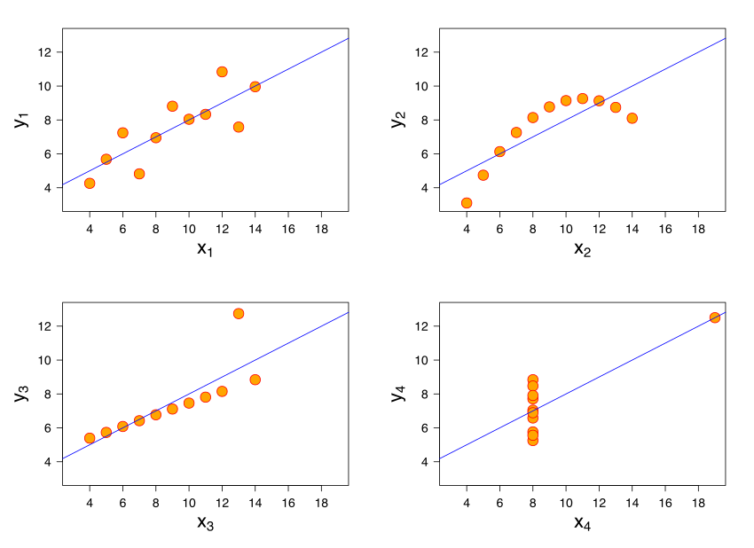
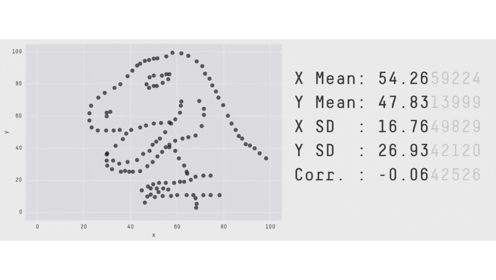
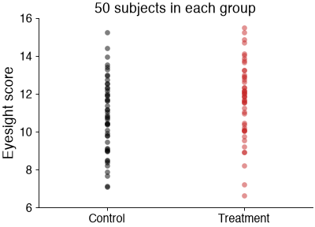
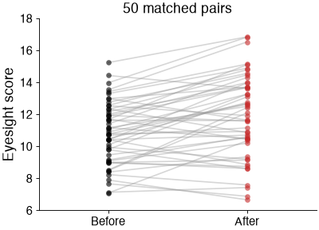
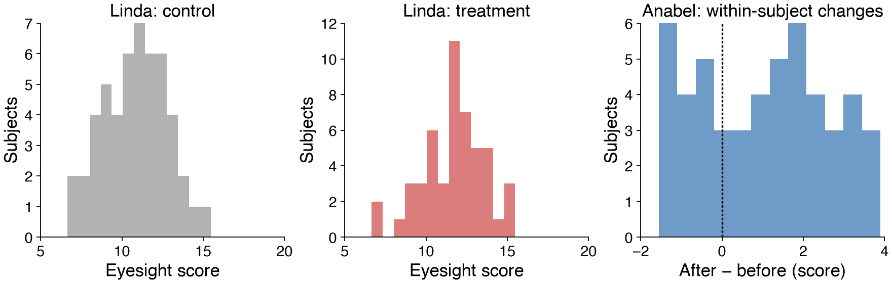

Inferential statistics¶
Descriptive statistics summarize the measurements we have. Inferential statistics use those measurements to ask questions about a population.
Does a treatment improve eyesight?¶
Return to Linda and Anabel’s hypothetical experiment from the earlier lecture. A larger test score means better eyesight.
Linda: 100 subjects; 50 receive saline (control), and 50 receive a treatment. Each subject is measured once.
Anabel: 50 subjects; each is measured before and after treatment.
import numpy as np
from scipy import stats
What are the hypotheses?¶
Start with a two-sided question: does the mean score differ?
Independent groups: \(H_0:\mu_\mathrm{treatment}-\mu_\mathrm{control}=0\); \(H_1:\) the difference is not zero.
Paired observations: \(H_0:\mu_\mathrm{change}=0\); \(H_1:\) the mean within-subject change is not zero.
Discuss: can a statistical test prove either hypothesis?
A p-value is the probability, assuming the null hypothesis and the test’s assumptions, of a test statistic at least as extreme as the observed one. It is not the probability that the null is true, and it does not measure effect size. With a preselected threshold such as 0.05, a small p-value is evidence against the null; a large one does not prove that there is no difference.
Plot your data!¶
Before choosing a test, inspect the observations. Summary statistics can hide important differences.

Anscombe’s four datasets have almost identical means, variances, correlation, and fitted regression line, despite their different shapes.
Discuss: which problems would you miss by looking only at a mean and SD?
The same lesson appears in the data dinosaur: very different arrangements of points can preserve nearly the same summaries.

Load the two datasets¶
The included CSV files have no header and three columns: subject ID, condition (0 or 1), score. In design 1, condition means control/treatment; in design 2, it means before/after.
Design 1: Independent groups¶
ds1 = np.loadtxt('data/independent.csv', delimiter=',')
control_rows = ds1[ds1[:, 1] == 0]
treatment_rows = ds1[ds1[:, 1] == 1]
control = control_rows[:, 2]
treatment = treatment_rows[:, 2]
print('Control:', len(control), 'Treatment:', len(treatment))
Control: 50 Treatment: 50

Mini exercise: Reconstruct the plot¶
Plot condition versus score. Use black for control and red for treatment. Use the row arrays above to select the appropriate columns. Why should we not join the first control subject to the first treatment subject?
# Your plotting solution here. Import matplotlib.pyplot as plt if needed.
Design 2: Paired observations¶
Each subject occurs twice. Match observations by ID before calculating changes. The matching checks below also catch missing counterparts and repeated IDs within a condition.
ds2 = np.loadtxt('data/paired.csv', delimiter=',')
before_rows = ds2[ds2[:, 1] == 0]
after_rows = ds2[ds2[:, 1] == 1]
# Match by subject ID, never by score or an assumed row order.
before_rows = before_rows[np.argsort(before_rows[:, 0])]
after_rows = after_rows[np.argsort(after_rows[:, 0])]
assert np.array_equal(before_rows[:, 0], after_rows[:, 0])
assert len(np.unique(before_rows[:, 0])) == len(before_rows)
before = before_rows[:, 2]
after = after_rows[:, 2]
changes = after - before
print('Paired subjects:', len(changes))
Paired subjects: 50

Mini exercise: Preserve the pairing¶
Reconstruct this plot. Connect each subject’s before and after score. Why would sorting the two conditions independently by score change the analysis?
# Your plotting solution here.
Are the observations independent? Paired or unpaired?¶
Linda: two independent groups, with 50 subjects in each. No meaningful control/treatment pairing.
Anabel: 50 independent subjects, each providing a pair. The analysis uses the 50 within-subject differences.
Discuss: Anabel has no untreated comparison over time. Even if scores improve, can this design alone distinguish a treatment effect from practice or another time effect?
One-sided or two-sided?¶
A two-sided test asks whether a mean difference is nonzero in either direction. A one-sided test for improvement asks whether the difference is positive; its null includes zero and negative differences.
Choose the direction before looking at the results. We use two-sided tests here; the earlier lecture’s directional question becomes a short exercise.
In SciPy, alternative='greater' compares the first argument minus the second against zero.
For stats.ttest_ind(treatment, control, ...), “greater” means higher treatment scores.
Is the relevant distribution approximately normal?¶
For the independent t-test, inspect each group’s distribution. For the paired t-test, inspect the within-subject differences. Exact small-sample t inference uses normal population distributions for the relevant quantities; larger-sample inference can tolerate some departures. Strong skew, extreme observations, and small samples need particular care.

Mini exercise: Test for normality¶
Use stats.normaltest on control, treatment, and changes.
Its null is that the observations come from a normal distribution. The function requires at least eight observations.
What would a small p-value mean here? Why does a large one not prove normality? Do not automatically switch tests based on this single p-value: consider the plots, sample size, design, and scientific question together.
# Your solution here: run the three normality checks and interpret them.
Equal variance?¶
The pooled independent-samples t-test assumes equal population variances.
Welch’s t-test relaxes that assumption: use equal_var=False.
It still needs independent observations and a reasonable sampling model.
For the paired test, we analyze differences; we do not need equal before/after variances.
Choose the test from the design and question¶
Design |
Mean-based comparison |
Common rank-based comparison |
|---|---|---|
Independent groups |
Welch: |
|
Paired measurements |
|
|
Rank-based tests are not assumption-free replacements for t-tests. Mann–Whitney compares distributions; interpreting it purely as a median difference needs additional shape assumptions. Wilcoxon signed-rank tests symmetry of the difference distribution about zero; its usual location interpretation assumes symmetric differences.
Independent t-test · Paired t-test · Wilcoxon
Mini exercise: Run the tests¶
Run a two-sided Welch test for Linda and a two-sided paired t-test for Anabel. For each, calculate the mean difference in score units and inspect the returned statistic and p-value. Write one sentence about the evidence, and one about what the design cannot establish.
# Your solution here.
# Linda: treatment minus control.
# Anabel: after minus before, with subjects matched by ID.
Mini exercise: Return to the directional question¶
Suppose “treatment increases score” was specified in advance. Repeat Linda’s test using alternative='greater'.
What changes if the argument order is reversed?
# Your solution here.
If you want to compare more than two groups — optional¶
For independent groups, conventional one-way ANOVA (stats.f_oneway) tests equality of population means under its independence, normal-error, and equal-variance assumptions.
Kruskal–Wallis (stats.kruskal) offers a rank-based comparison with a different null and its own assumptions.
A significant omnibus test gives evidence that not all groups are alike under the tested hypothesis; it does not say which pairs differ. Use comparisons appropriate to the design and control multiple testing. Tukey’s method is an option for all pairwise comparisons after a conventional equal-variance ANOVA; Dunnett’s compares treatments with a common control.
Repeatedly trying tests until one reaches p < 0.05 increases the chance of false positives.
What should we report?¶
State the experimental unit and sample sizes, show the observations, describe the pairing and hypotheses, and report the mean difference, test, and p-value.